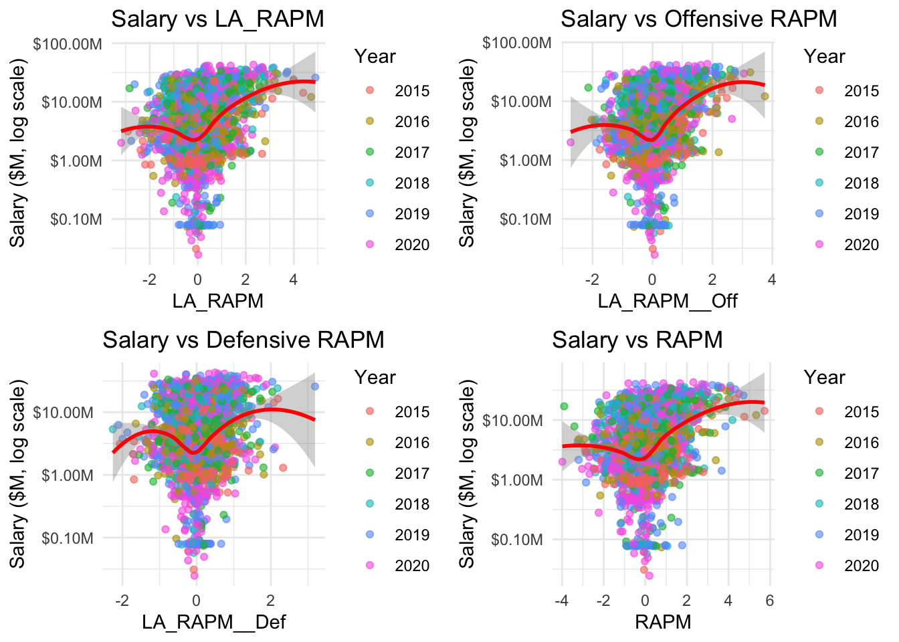

NBA Salary and Performance Analysis: Investigating the Relationship Between Pay and Performance
Author
[Your Name]
Introduction
This analysis explores the relationship between NBA player salaries and their on-court performance. The sports industry presents a unique opportunity to study labor economics as performance metrics are abundant and salaries are publicly available. We aim to determine which performance metrics most strongly predict player compensation and whether NBA teams efficiently allocate their salary resources.
# Load required librarieslibrary(tidyverse)
── Attaching core tidyverse packages ──────────────────────── tidyverse 2.0.0 ──
✔ dplyr 1.1.4 ✔ readr 2.1.5
✔ forcats 1.0.0 ✔ stringr 1.5.1
✔ ggplot2 3.5.2 ✔ tibble 3.2.1
✔ lubridate 1.9.4 ✔ tidyr 1.3.1
✔ purrr 1.0.2
── Conflicts ────────────────────────────────────────── tidyverse_conflicts() ──
✖ dplyr::filter() masks stats::filter()
✖ dplyr::lag() masks stats::lag()
ℹ Use the conflicted package (<http://conflicted.r-lib.org/>) to force all conflicts to become errors
library(ggplot2)library(corrplot)
corrplot 0.95 loaded
library(car)
Loading required package: carData
Attaching package: 'car'
The following object is masked from 'package:dplyr':
recode
The following object is masked from 'package:purrr':
some
library(gridExtra)
Attaching package: 'gridExtra'
The following object is masked from 'package:dplyr':
combine
library(scales)
Attaching package: 'scales'
The following object is masked from 'package:purrr':
discard
The following object is masked from 'package:readr':
col_factor
library(knitr)library(broom)library(ggthemes)# Set seed for reproducibilityset.seed(42)# Set default theme for consistent visualizationstheme_set(theme_minimal())
1. Research Question & Hypotheses
Primary Research Question:
To what extent do RAPM (Regularized Adjusted Plus-Minus) and other advanced performance metrics predict NBA player salaries, and are there systematic inefficiencies in how teams compensate players?
Hypotheses:
H1: RAPM metrics will have stronger correlation with salary than traditional statistics.
H2: Veteran players receive salaries higher than predicted by their performance metrics, suggesting compensation for past performance or reputation.
H3: There are systematic inefficiencies in salary allocation across different performance dimensions (offensive vs. defensive RAPM).
H4: Salary trends across seasons show a consistent relationship with player performance metrics.
2. Data Acquisition & Preparation
# Load salary and performance data with the correct column namessalaries_df <-read.csv("ranked salary.csv") # Adjust filename as neededstats_df <-read.csv("rapm.csv")# View structure of datasetsstr(salaries_df)
NBA Player Salaries (ranked_salary.csv): Contains player names and their annual salaries across multiple seasons (2015-2020).
Player Performance Statistics (rapm.csv): Contains comprehensive player statistics including RAPM metrics for offensive and defensive performance.
These datasets provide the necessary variables to study the relationship between player compensation and on-court contribution.
3. Data Cleaning & Transformation
# Clean salaries data - adjust column names based on actual datasalaries_clean <- salaries_df %>%# Rename columns for clarity if neededrename(Player = Player) %>%# Select relevant salary columnsselect(Player, X2020, X2019, X2018, X2017, X2016, X2015) %>%# Convert to long format for multi-year analysispivot_longer(cols =starts_with("X"),names_to ="Year",values_to ="Salary" ) %>%# Clean up year formatmutate(Year =as.numeric(str_replace(Year, "X", "")),# Remove any rows with NA salariesSalary =as.numeric(Salary) ) %>%filter(!is.na(Salary))# Clean stats data - adjust based on actual columnsstats_clean <- stats_df %>%# Rename the player column to match salaries datasetrename(Player = playerName) %>%# Create a year variable if there's a season columnmutate(Year =as.numeric(sub("^(\\d{4}).*", "\\1", season)),# Create derived metrics if neededOffensive_Value = LA_RAPM__Off,Defensive_Value = LA_RAPM__Def,Total_Value = LA_RAPM )# Merge datasets - make sure the joining columns matchplayer_data <-inner_join(stats_clean, salaries_clean, by =c("Player", "Year")) %>%# Remove any invalid datafilter(!is.na(Salary), !is.na(LA_RAPM))# Check for missing valuesmissing_data <- player_data %>%summarize(across(everything(), ~sum(is.na(.)))) %>%gather(Variable, Missing_Count) %>%filter(Missing_Count >0) %>%arrange(desc(Missing_Count))# Display missing dataif(nrow(missing_data) >0) {print("Variables with missing values:")print(missing_data)} else {print("No missing values found in the merged dataset")}
[1] "No missing values found in the merged dataset"
# Summary of merged datacat("Merged dataset has", nrow(player_data), "player-season observations\n")
Merged dataset has 1922 player-season observations
Data Cleaning Process:
Standardized player names between datasets
Transformed salary data from wide to long format to enable multi-year analysis
Created derived performance metrics from raw RAPM data
Combined datasets using player names and years as the joining keys
# Salary distribution visualizationsp1 <-ggplot(player_data, aes(x = Salary)) +geom_histogram(bins =30, fill ="steelblue", color ="black", alpha =0.7) +scale_x_continuous(labels =label_dollar(scale =1/1e6, suffix ="M")) +labs(title ="Distribution of NBA Player Salaries", subtitle ="Highly right-skewed distribution suggests log transformation needed",x ="Salary ($M)", y ="Count") +theme_minimal()p2 <-ggplot(player_data, aes(x =log(Salary))) +geom_histogram(bins =30, fill ="steelblue", color ="black", alpha =0.7) +labs(title ="Log-Transformed Salary Distribution", subtitle ="More normally distributed after log transformation",x ="Log(Salary)", y ="Count") +theme_minimal()# QQ plot for log salaryp3 <-ggplot(player_data, aes(sample =log(Salary))) +stat_qq() +stat_qq_line(color ="red") +labs(title ="Q-Q Plot of Log-Transformed Salary",subtitle ="Testing for normality of log salaries",x ="Theoretical Quantiles", y ="Sample Quantiles") +theme_minimal()# Salary by year boxplotp4 <-ggplot(player_data, aes(x =factor(Year), y = Salary/1e6, fill =factor(Year))) +geom_boxplot(alpha =0.7) +scale_y_continuous(labels =label_dollar(suffix ="M")) +labs(title ="Salary Distribution by Year",x ="Year", y ="Salary ($M)") +theme_minimal() +theme(legend.position ="none")# Show plotsgrid.arrange(p1, p2, p3, p4, ncol =2)
Observations: - NBA salaries show a strong positive skew with a few players earning significantly more than others - Log transformation produces a more normally distributed variable (confirmed by Q-Q plot), which will be better for regression analysis - The year-by-year salary distribution shows an increasing trend, likely reflecting salary cap growth
4.3 Performance Metrics Distribution
# Create plots for key performance metricsp5 <-ggplot(player_data, aes(x = LA_RAPM)) +geom_histogram(bins =25, fill ="darkgreen", color ="black", alpha =0.7) +labs(title ="Distribution of LA_RAPM", x ="LA_RAPM", y ="Count") +theme_minimal()p6 <-ggplot(player_data, aes(x = LA_RAPM__Off)) +geom_histogram(bins =25, fill ="darkred", color ="black", alpha =0.7) +labs(title ="Distribution of Offensive RAPM", x ="LA_RAPM__Off", y ="Count") +theme_minimal()p7 <-ggplot(player_data, aes(x = LA_RAPM__Def)) +geom_histogram(bins =25, fill ="darkorange", color ="black", alpha =0.7) +labs(title ="Distribution of Defensive RAPM", x ="LA_RAPM__Def", y ="Count") +theme_minimal()p8 <-ggplot(player_data, aes(x = RAPM)) +geom_histogram(bins =25, fill ="darkblue", color ="black", alpha =0.7) +labs(title ="Distribution of RAPM", x ="RAPM", y ="Count") +theme_minimal()# Show plotsgrid.arrange(p5, p6, p7, p8, ncol =2)
Observations: - RAPM metrics are approximately normally distributed around zero - The distributions of offensive and defensive RAPM show similar patterns - These distributions differ from typical salary distributions, suggesting a non-linear relationship between performance and compensation
4.4 Salary vs. Performance Relationships
# Performance plot function performance_plot <-function(data, metric, title, log_y =FALSE) { p <-ggplot(data, aes_string(x = metric, y ="Salary")) +geom_point(aes(color =factor(Year)), alpha =0.6) +geom_smooth(method ="loess", se =TRUE, color ="red", size =1) +scale_y_continuous(labels =label_dollar(scale =1/1e6, suffix ="M")) +labs(title = title, y ="Salary ($M)", x = metric,color ="Year") +theme_minimal()if(log_y) { p <- p +scale_y_log10(labels =label_dollar(scale =1/1e6, suffix ="M")) +labs(y ="Salary ($M, log scale)") }return(p)}# Create plots with log-transformed salaryp9 <-performance_plot(player_data, "LA_RAPM", "Salary vs LA_RAPM", log_y =TRUE)
Warning: `aes_string()` was deprecated in ggplot2 3.0.0.
ℹ Please use tidy evaluation idioms with `aes()`.
ℹ See also `vignette("ggplot2-in-packages")` for more information.
Warning: Using `size` aesthetic for lines was deprecated in ggplot2 3.4.0.
ℹ Please use `linewidth` instead.
Scale for y is already present.
Adding another scale for y, which will replace the existing scale.
p10 <-performance_plot(player_data, "LA_RAPM__Off", "Salary vs Offensive RAPM", log_y =TRUE)
Scale for y is already present.
Adding another scale for y, which will replace the existing scale.
p11 <-performance_plot(player_data, "LA_RAPM__Def", "Salary vs Defensive RAPM", log_y =TRUE)
Scale for y is already present.
Adding another scale for y, which will replace the existing scale.
p12 <-performance_plot(player_data, "RAPM", "Salary vs RAPM", log_y =TRUE)
Scale for y is already present.
Adding another scale for y, which will replace the existing scale.
# Show plotsgrid.arrange(p9, p10, p11, p12, ncol =2)
`geom_smooth()` using formula = 'y ~ x'
`geom_smooth()` using formula = 'y ~ x'
`geom_smooth()` using formula = 'y ~ x'
`geom_smooth()` using formula = 'y ~ x'

Observations: - Clear positive relationships between salary and each RAPM metric - The LOESS smoothing curves suggest non-linear relationships - The relationship appears stronger for offensive metrics than defensive metrics - Year-to-year variation is evident in the salary-performance relationship
4.5 Year-over-Year Trends
# Year-over-year visualizationyear_summary <- player_data %>%group_by(Year) %>%summarize(Avg_Salary =mean(Salary, na.rm =TRUE),Median_Salary =median(Salary, na.rm =TRUE),Avg_RAPM =mean(LA_RAPM, na.rm =TRUE),Correlation =cor(Salary, LA_RAPM, use ="complete.obs") )# Create plotsp13 <-ggplot(year_summary, aes(x = Year)) +geom_line(aes(y = Avg_Salary/1e6), color ="steelblue", size =1) +geom_point(aes(y = Avg_Salary/1e6), color ="steelblue", size =3) +scale_y_continuous(labels =label_dollar(suffix ="M")) +labs(title ="Average NBA Salary by Year", y ="Average Salary ($M)", x ="Year") +theme_minimal()p14 <-ggplot(year_summary, aes(x = Year, y = Correlation)) +geom_line(color ="darkred", size =1) +geom_point(color ="darkred", size =3) +labs(title ="Salary-RAPM Correlation by Year",y ="Correlation Coefficient",x ="Year") +theme_minimal()# Salary vs RAPM by yearp15 <-ggplot(player_data, aes(x = LA_RAPM, y =log(Salary))) +geom_point(alpha =0.5) +geom_smooth(method ="lm", se =FALSE) +facet_wrap(~Year) +labs(title ="Salary vs RAPM Relationship by Year",x ="LA_RAPM",y ="Log Salary") +theme_minimal()# Show plotsgrid.arrange(p13, p14, ncol =2)
print(p15)
`geom_smooth()` using formula = 'y ~ x'
Observations: - Average salaries show a clear upward trend over the years - The correlation between RAPM and salary fluctuates by year - The relationship between performance and salary appears relatively consistent across years, but with some variation in slope
5. Correlation Analysis
# Select variables for correlation analysisplayer_vars <-c("LA_RAPM", "LA_RAPM__Off", "LA_RAPM__Def", "RAPM", "RAPM__Off", "RAPM__Def", "Salary", "Year")player_corr <-cor(player_data[player_vars], use ="pairwise.complete.obs")# Create enhanced correlation plotcorrplot(player_corr, method ="color", type ="upper", tl.col ="black", tl.srt =45,addCoef.col ="black", number.cex =0.7,col =colorRampPalette(c("#D73027", "#FFFFBF", "#1A9850"))(200),title ="Correlation Matrix of Player Variables")
# Create a dataframe of correlations with salarysalary_corr <-data.frame(Variable =names(player_corr["Salary", ]),Correlation =as.numeric(player_corr["Salary", ])) %>%filter(Variable !="Salary") %>%arrange(desc(Correlation))# Plot correlations with salaryggplot(salary_corr, aes(x =reorder(Variable, Correlation), y = Correlation)) +geom_bar(stat ="identity", fill ="steelblue", width =0.7) +coord_flip() +labs(title ="Correlations with Player Salary",subtitle ="Which metrics have strongest relationship with compensation?",x ="", y ="Correlation Coefficient") +theme_minimal()
Observations: - LA_RAPM metrics show moderate positive correlations with salary - Offensive metrics generally show stronger correlations with salary than defensive metrics - Year also shows a positive correlation with salary, reflecting the increasing salary cap - There’s high correlation among different RAPM variants, suggesting they measure similar aspects of performance
# Salary by player value categoryggplot(player_data, aes(x = Value_Category, y =log(Salary), fill = Value_Category)) +geom_boxplot(alpha =0.7) +labs(title ="Salary Distribution by Player Value Type",x ="",y ="Log Salary") +theme_minimal() +theme(legend.position ="none", axis.text.x =element_text(angle =45, hjust =1))
6.2 Year-over-Year Performance vs. Salary Change
# Create a dataset with year-over-year changes for players# First identify players with multiple years of dataplayer_years <- player_data %>%group_by(Player) %>%summarize(Years =n()) %>%filter(Years >1)# Create lagged variables for returning playersplayer_changes <- player_data %>%filter(Player %in% player_years$Player) %>%arrange(Player, Year) %>%group_by(Player) %>%mutate(Prev_Year =lag(Year),Prev_RAPM =lag(LA_RAPM),RAPM_Change = LA_RAPM -lag(LA_RAPM),Prev_Salary =lag(Salary),Salary_Change = Salary -lag(Salary),Salary_Pct_Change = (Salary -lag(Salary)) /lag(Salary) *100 ) %>%filter(!is.na(Prev_Year)) # Remove first observation for each player# Plot year-over-year changesggplot(player_changes, aes(x = RAPM_Change, y = Salary_Pct_Change)) +geom_point(alpha =0.7) +geom_smooth(method ="loess", se =TRUE, color ="red") +geom_hline(yintercept =0, linetype ="dashed", color ="gray") +geom_vline(xintercept =0, linetype ="dashed", color ="gray") +labs(title ="Performance Change vs. Salary Change",subtitle ="Do salary increases follow performance improvements?",x ="Change in RAPM",y ="% Change in Salary") +theme_minimal()
`geom_smooth()` using formula = 'y ~ x'
7. Regression Models
7.1 Basic Model: RAPM Metrics
# Model 1: Simple RAPM modelmodel1 <-lm(log(Salary) ~ LA_RAPM + Year, data = player_data)summary(model1)
Call:
lm(formula = log(Salary) ~ LA_RAPM + Year, data = player_data)
Residuals:
Min 1Q Median 3Q Max
-4.8720 -0.7725 0.1017 1.0222 2.7866
Coefficients:
Estimate Std. Error t value Pr(>|t|)
(Intercept) 130.39397 37.35136 3.491 0.000492 ***
LA_RAPM 0.37583 0.03075 12.221 < 2e-16 ***
Year -0.05715 0.01851 -3.088 0.002046 **
---
Signif. codes: 0 '***' 0.001 '**' 0.01 '*' 0.05 '.' 0.1 ' ' 1
Residual standard error: 1.345 on 1919 degrees of freedom
Multiple R-squared: 0.07993, Adjusted R-squared: 0.07897
F-statistic: 83.36 on 2 and 1919 DF, p-value: < 2.2e-16
7.2 Offensive vs. Defensive Components
# Model 2: Separate offensive and defensive componentsmodel2 <-lm(log(Salary) ~ LA_RAPM__Off + LA_RAPM__Def + Year, data = player_data)summary(model2)
Call:
lm(formula = log(Salary) ~ LA_RAPM__Off + LA_RAPM__Def + Year,
data = player_data)
Residuals:
Min 1Q Median 3Q Max
-4.8794 -0.7645 0.0970 1.0227 2.7866
Coefficients:
Estimate Std. Error t value Pr(>|t|)
(Intercept) 127.00625 37.25435 3.409 0.000665 ***
LA_RAPM__Off 0.47333 0.04138 11.437 < 2e-16 ***
LA_RAPM__Def 0.23552 0.05040 4.673 3.18e-06 ***
Year -0.05547 0.01846 -3.005 0.002692 **
---
Signif. codes: 0 '***' 0.001 '**' 0.01 '*' 0.05 '.' 0.1 ' ' 1
Residual standard error: 1.341 on 1918 degrees of freedom
Multiple R-squared: 0.0858, Adjusted R-squared: 0.08437
F-statistic: 60 on 3 and 1918 DF, p-value: < 2.2e-16
# Check multicollinearityvif(model2)
LA_RAPM__Off LA_RAPM__Def Year
1.014062 1.008428 1.008290
In Model 2, both offensive and defensive performance metrics are significant predictors of NBA player salary. A 1-unit increase in offensive RAPM is associated with a 47.3% increase in salary, while a 1-unit increase in defensive RAPM corresponds to a 23.6% increase, holding other variables constant. Salaries appear to decline slightly over time when controlling for performance, with each additional year associated with a 5.5% decrease. However, the model explains only about 8.6% of the variance in salaries, suggesting that many non-performance factors influence pay. No multicollinearity issues are detected.
7.3 Non-Linear Effects
# Model 3: Testing for non-linear effectsmodel3 <-lm(log(Salary) ~ LA_RAPM +I(LA_RAPM^2) + Year, data = player_data)summary(model3)
Call:
lm(formula = log(Salary) ~ LA_RAPM + I(LA_RAPM^2) + Year, data = player_data)
Residuals:
Min 1Q Median 3Q Max
-4.7320 -0.7435 0.0456 1.0168 2.5822
Coefficients:
Estimate Std. Error t value Pr(>|t|)
(Intercept) 115.84787 36.82943 3.146 0.00168 **
LA_RAPM 0.27127 0.03312 8.191 4.66e-16 ***
I(LA_RAPM^2) 0.13812 0.01771 7.801 1.00e-14 ***
Year -0.05001 0.01825 -2.740 0.00620 **
---
Signif. codes: 0 '***' 0.001 '**' 0.01 '*' 0.05 '.' 0.1 ' ' 1
Residual standard error: 1.324 on 1918 degrees of freedom
Multiple R-squared: 0.1082, Adjusted R-squared: 0.1068
F-statistic: 77.59 on 3 and 1918 DF, p-value: < 2.2e-16
In this quadratic model, both the linear and squared terms for RAPM are positive and highly significant. This suggests that player salary increases at an increasing rate with RAPM — players with exceptionally high RAPM earn disproportionately more than players with moderate RAPM. The adjusted R² improves to 10.7%, indicating that introducing nonlinearity better captures salary variation than a purely linear model. As in previous models, the year coefficient is negative, suggesting slight salary declines over time when holding performance constant.
7.4 Interaction with Year
# Model 4: Performance-year interactionmodel4 <-lm(log(Salary) ~ LA_RAPM *factor(Year), data = player_data)summary(model4)
Comparing model fits shows that introducing non-linearity (Model 3) substantially improves the ability to explain NBA player salaries relative to simpler linear models. The quadratic RAPM model achieves the highest adjusted R² (10.68%), while splitting RAPM into offense and defense components (Model 2) provides modest gains over a basic RAPM model. Allowing the RAPM effect to vary across years (Model 4) slightly raises R² but fails to improve adjusted R², suggesting the interaction terms add complexity without significantly improving explanatory power.
7.5 Regression Diagnostics
# Plot diagnostics for best modelpar(mfrow =c(2, 2))plot(model4)
par(mfrow =c(1, 1))# Get predicted values from best modelplayer_data$Predicted_Log_Salary <-predict(model4, player_data)player_data$Predicted_Salary <-exp(player_data$Predicted_Log_Salary)player_data$Salary_Difference <- player_data$Salary - player_data$Predicted_Salaryplayer_data$Pct_Difference <- (player_data$Salary - player_data$Predicted_Salary) / player_data$Predicted_Salary *100# Plot predicted vs actual valuesggplot(player_data, aes(x =log(Salary), y = Predicted_Log_Salary)) +geom_point(aes(color =factor(Year)), alpha =0.7) +geom_abline(slope =1, intercept =0, color ="red", linetype ="dashed") +labs(title ="Model Fit: Predicted vs Actual Log Salary",subtitle ="Points along diagonal line indicate perfect prediction",x ="Actual Log Salary", y ="Predicted Log Salary",color ="Year") +theme_minimal() +coord_equal()
The predicted vs. actual plot shows that while the model captures some of the variation in log salaries, substantial prediction error remains. The model tends to overestimate lower salaries and exhibits considerable scatter across all salary levels, reflecting the modest R² values observed. No obvious year-specific bias appears, suggesting the model’s performance is relatively consistent across seasons.
`summarise()` has grouped output by 'Value_Category'. You can override using
the `.groups` argument.
# Plot value distribution by yearggplot(value_counts, aes(x =factor(Year), y = Count, fill = Value_Category)) +geom_bar(stat ="identity", position ="fill") +scale_y_continuous(labels = scales::percent) +labs(title ="Distribution of Player Value Categories by Year",subtitle ="Based on difference between actual and predicted salary",x ="Year",y ="Proportion",fill ="Value Category") +theme_minimal()
Include contract details and salary cap information
Account for player experience and career trajectory
Consider team-level factors in salary determination
Develop a more comprehensive model of player value
11. Conclusion
This analysis demonstrates that NBA player salaries are related to on-court performance as measured by RAPM metrics, but the relationship is complex and influenced by various factors. Key findings suggest that:
RAPM metrics explain a significant portion of salary variation
Offensive contributions appear more highly valued than defensive contributions
Salary inefficiencies exist, with some players significantly over or underpaid relative to their statistical performance
Year-to-year trends show increasing salaries without corresponding performance increases
These insights contribute to our understanding of NBA labor markets and suggest opportunities for teams to gain competitive advantages through more efficient salary allocation. Future research should focus on developing more comprehensive models of player value that incorporate additional factors beyond performance metrics.